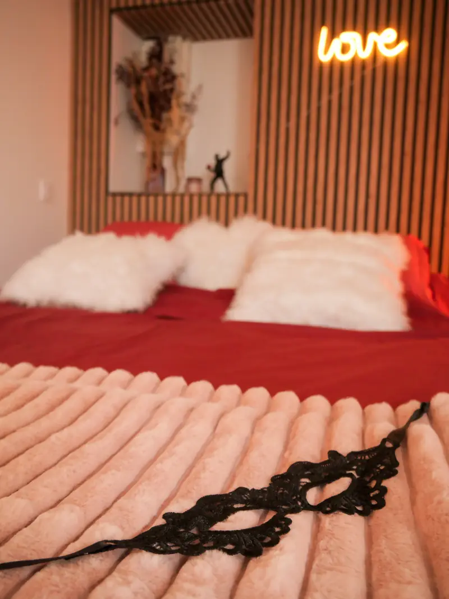
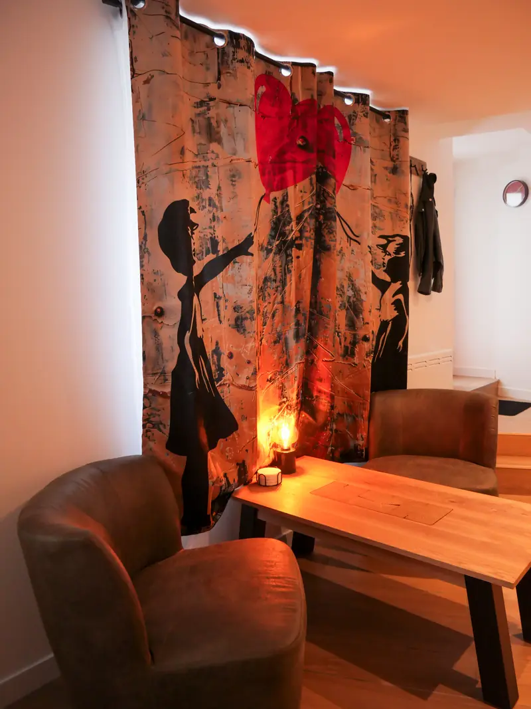
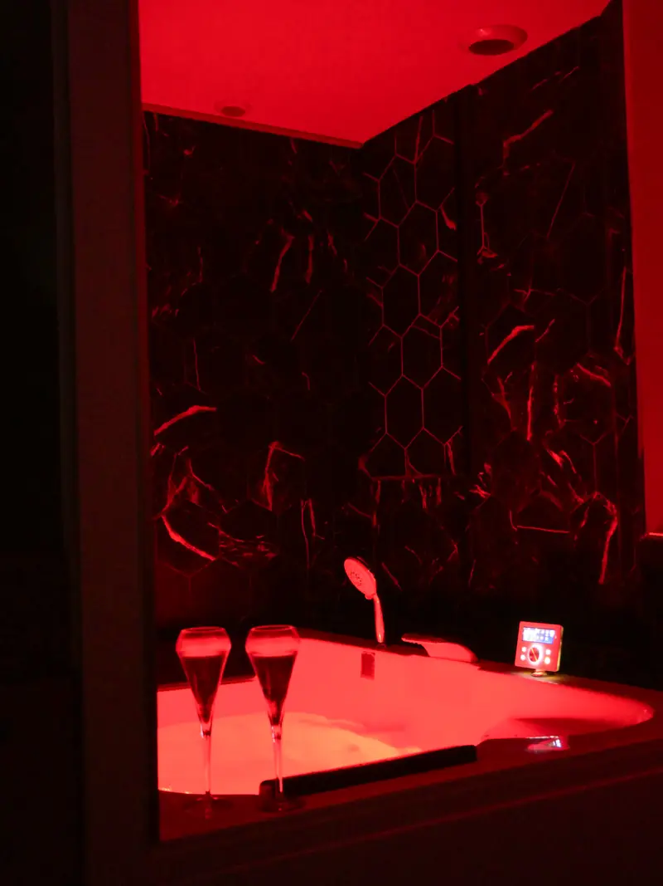

Love room avec jacuzzi privatif, centre-ville de Bourg-en-Bresse
Le secretde minuit
Un studio romantique, récemment rénové, pensé pour deux : lit king size, baignoire balnéo 2 places avec chromothérapie, et tout le confort d'un logement entier en plein centre de Bourg-en-Bresse.
5,0 sur Airbnb, 100 % d'avis 5 étoiles

- 2 voyageurs
- Studio entier, rien que pour vous
- Lit king size
- 160 × 200, literie de qualité
- Balnéo 2 places
- Jets de massage et chromothérapie
- Centre-ville
- Théâtre et marché à 4 min à pied
- Parking
- Gratuit dans la rue
- Arrivée autonome
- Boîte à clé sécurisée
Une suite romantique au cœur de Bourg-en-Bresse
Le secret de minuit est un studio récemment rénové, décoré avec soin pour offrir intimité et sérénité. Bois clair, marbre noir veiné d'or, linge rouge profond et lumière tamisée : une véritable love room pour une nuit insolite, un anniversaire ou un week-end en amoureux dans l'Ain.
Vous y trouvez un lit king size 160 × 200 avec une literie de qualité, une cuisine équipée, une table pour deux, la télévision avec Netflix et YouTube, le Wi-Fi, le linge fourni, ainsi que le thé et le café offerts. Un livret d'accueil personnalisé vous attend avec nos bonnes adresses.
- Week-end en amoureux
- Nuit insolite
- Anniversaire, Saint-Valentin
- Déplacement professionnel


Une baignoire balnéo 2 places rien que pour vous
Le cœur du studio : une grande baignoire balnéo 180 × 120 cm pour deux, dans un écrin de marbre noir veiné d'or. Un jacuzzi privatif, sans voisin ni horaire, pour un bain à deux après une journée de visites ou de réunions.
- Hydromassage complet : 24 jets eau et air, dont des hydrojets orientables et des jets dorsaux, pour dénouer le dos et les jambes et favoriser une détente musculaire profonde.
- Chromothérapie : un éclairage LED immergé qui baigne l'eau de couleur. Rouge pour une ambiance chaleureuse, bleu pour apaiser, couleurs tournantes pour se laisser porter : la luminothérapie par les couleurs, réputée pour favoriser la relaxation et un meilleur sommeil.
- Hygiène maîtrisée : circuit avec fonction de rinçage automatique, baignoire nettoyée et désinfectée entre chaque séjour.
Un logement tout équipé
Arrivez avec votre valise, vous trouverez tout ce qu'il faut sur place.
Dormir
- Lit king size 160 × 200
- Literie de qualité, linge de lit fourni
- Chauffage
- Lit parapluie bébé sur demande
Se détendre
- Baignoire balnéo 2 places avec chromothérapie
- Télévision avec chaînes, Netflix et YouTube
- Wi-Fi
- Lumières d'ambiance
Cuisiner
- Cuisine entièrement équipée
- Plaques, micro-ondes, réfrigérateur et congélateur
- Machine à café, bouilloire, grille-pain
- Thé et café offerts
- Vaisselle et verres à vin
Espace beauté
- Vasque en pierre et miroir
- Sèche-cheveux
- Shampoing et gel douche
- Produits de première nécessité
Pratique
- Accès facile : arrivée autonome avec une boîte à clé sécurisée
- Rez-de-chaussée, entrée indépendante
- Stationnement gratuit dans la rue
- Logement récemment rénové, non-fumeur
Des attentions sur demande
Pour une occasion particulière, demandez-nous avant votre arrivée : bouquet de fleurs dans le studio, arrivée tardive, lit parapluie pour bébé… Dites-nous ce qui ferait de votre séjour un moment à part et nous ferons au mieux pour l'organiser.
5,0sur 5 sur Airbnb,
100 % d'avis 5 étoiles
Ce qu'en disent nos voyageurs
- Propreté
- 4,8
- Précision
- 5,0
- Arrivée
- 5,0
- Communication
- 5,0
- Emplacement
- 4,8
- Qualité-prix
- 4,8
« Logement conforme à la description. Très calme, on n'entend pas le bruit de la rue. Bien placé, proche du centre-ville. La literie est top. »
« Logement impeccable, je recommande. »
« Très bien, je recommande. »
Centre-ville de Bourg-en-Bresse, tout à pied
Le studio se trouve en plein centre de Bourg-en-Bresse, dans une rue calme à deux pas du théâtre, du marché couvert et des rues commerçantes. L'adresse complète vous est donnée après réservation.
Le monastère royal de Brou, chef-d'œuvre gothique et monument le plus visité de l'Ain, est à 20 minutes à pied ou 5 minutes en voiture. Et pour les gourmands : la volaille de Bresse se déguste dans les restaurants du centre.
- Arrivée
- À partir de 16 h, en autonomie
- Départ
- Avant 11 h
- Capacité
- 2 voyageurs
- À noter
- Logement non-fumeur
À pied
- Théâtre de Bourg-en-Bresse (scène nationale)4 min
- Marché couvert et Champ de Foiremercredi et samedi matin4 min
- Campus universitaire4 min
- Rues commerçantes et restaurants5 min
- Co-cathédrale Notre-Dame6 min
- Préfecture de l'Ain8 min
- Tribunal judiciaire10 min
- Apothicairerie de l'Hôtel-Dieu16 min
- Gare SNCF de Bourg-en-Bresse5 min en voiture ou en bus20 min
- Monastère royal de Brou22 min
En voiture
- Ekinox et Ainterexpo (salons, concerts, matchs)7 min
- Hôpital Fleyriat7 min
- Base de loisirs de Bouvent8 min
- Parc des Oiseaux, Villars-les-Dombes30 min
- Mâcon35 min
- Pérouges, cité médiévale45 min
- Lyon1 h 05
- Genève1 h 40
Questions fréquentes
Ce que l'on nous demande le plus souvent avant de réserver.
Le jacuzzi est-il vraiment privatif ?
Oui. La baignoire balnéo 2 places se trouve à l'intérieur du studio, qui est loué en entier : vous êtes seuls dans le logement, sans voisin ni horaire d'accès.
Où se situe exactement le logement ?
Au centre-ville de Bourg-en-Bresse, à 4 minutes à pied du théâtre et du marché couvert, 20 minutes à pied de la gare SNCF (5 minutes en voiture). L'adresse complète vous est communiquée après réservation.
Peut-on se garer facilement ?
Oui, le stationnement est gratuit dans la rue, juste devant le logement.
Comment se passe l'arrivée ?
L'arrivée est autonome, à partir de 16 h, grâce à une boîte à clé sécurisée dont le code vous est envoyé avant votre séjour. Une arrivée tardive est possible sur demande. Le départ se fait avant 11 h.
Le studio convient-il pour un week-end en amoureux ?
C'est sa vocation première : lit king size, baignoire balnéo 2 places avec chromothérapie, décoration pensée comme une suite romantique. Un bouquet de fleurs peut être ajouté sur demande pour une occasion spéciale.
Peut-on y séjourner pour un déplacement professionnel ?
Oui. Le studio dispose du Wi-Fi, d'une table de travail et d'une cuisine équipée. Le tribunal, la préfecture et le campus sont à moins de 10 minutes à pied, Ainterexpo et l'hôpital Fleyriat à moins de 10 minutes en voiture. En savoir plus sur la location courte durée.
Combien de personnes peuvent dormir dans le studio ?
Le studio accueille 2 voyageurs. Un lit parapluie pour bébé est disponible sur demande.
Comment réserver ?
La réservation se fait exclusivement sur Airbnb, avec paiement sécurisé. Les tarifs et disponibilités s'affichent dès que vous indiquez vos dates.
Votre prochaine nuit à Bourg-en-Bresse
Disponibilités, tarifs et réservation se font sur Airbnb, avec paiement sécurisé.
Virginie, votre hôte, et Lucas, de la conciergerie, répondent en général dans l'heure.